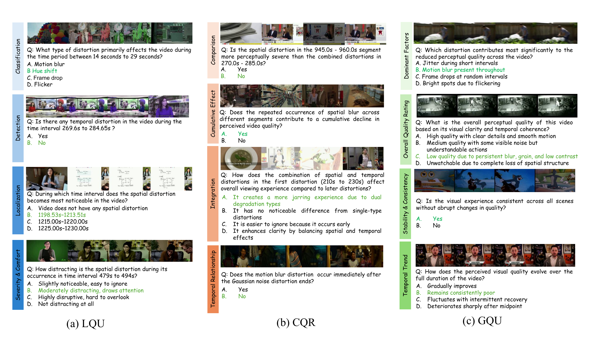

Nanyang Technological University, Singapore
The evaluation of long-term video quality understanding remains an open challenge for large vision–language models (LVLMs). Existing video quality benchmarks predominantly focus on short clips and isolated distortions, overlooking the temporal continuity, cumulative degradation, and reasoning complexity inherent in long-duration content. To address these limitations, we present LongVQUBench, a comprehensive benchmark for long-term video quality understanding. LongVQUBench contains over 1,200 diverse videos spanning movies, documentaries, surveillance footage, egocentric recordings, and animated content, accompanied by 1,500 multiple-choice and open-ended questions for validation and testing.
To assess perceptual reasoning across different temporal scopes, we introduce three progressively complex evaluation levels: (i) local event quality understanding (LQU) for analyzing localized distortions; (ii) cross-event quality reasoning (CQR) for integrating multiple degraded events; and (iii) global quality understanding (GQU) for holistic perceptual evaluation over extended durations. Furthermore, a needle distortion question-answering (NDQA) paradigm is embedded across all three levels, where subtle spatial or temporal artifacts are sparsely inserted to probe fine-grained detection and reasoning capabilities. Extensive experiments on 14 state-of-the-art LVLMs reveal significant performance degradation with increasing video length and reasoning depth, highlighting their limited capacity for long-range temporal integration and perceptual attribution.
Three progressively complex levels probe a model's capacity from local distortion detection to global perceptual quality.
Detect, localize, classify, and assess the severity of a single, temporally bounded distortion event such as localized blur, flicker, or compression noise.
Compare, associate, and integrate multiple distortion events distributed across extended temporal spans. Evaluates cumulative effects and temporal relations.
Synthesize a holistic perceptual judgment over the entire video — tracking quality trends, dominant degradations, and evaluating overall perceptual stability.

Representative questions across the three evaluation levels of LongVQUBench.
Videos sourced from LongVideoBench, MLVU, and LongVideoReason, documentaries, surveillance, vlogs, cooking, animated infographics, and news.
Video content category distribution.
Video duration range distribution.
Zero-shot evaluation on the 60% held-out test set (multiple-choice questions).
Orange bold = best per column.
·
Closed
Open
Agentic
| Rank | Model | Type | Overall | LQU | CQR | GQU |
|---|---|---|---|---|---|---|
| 🥇 1 | GPT-5 | Closed | 69.5 | 72.1 | 81.2 | 65.8 |
| 🥈 2 | Gemini-3 | Closed | 66.8 | 70.3 | 76.5 | 59.2 |
| 🥉 3 | DeepVideoDiscovery | Agentic | 66.0 | 69.2 | 82.7 | 62.4 |
| 4 | Qwen-VL-Max | Closed | 64.0 | 67.8 | 74.1 | 57.3 |
| 5 | Qwen3-VL | Open | 63.1 | 66.4 | 72.8 | 55.9 |
| 6 | Long-RL | Open | 61.4 | 64.2 | 71.5 | 54.8 |
| 7 | VQA² | Open | 59.4 | 62.1 | 68.3 | 51.2 |
| 8 | LLaVA-Video | Open | 57.8 | 60.3 | 65.7 | 49.6 |
| 9 | LongVT | Agentic | 56.2 | 58.9 | 63.4 | 48.1 |
| 10 | LLaVA-NeXT-Video | Open | 54.7 | 57.2 | 61.9 | 46.3 |
| 11 | ShareGPT4Video | Open | 53.1 | 55.8 | 59.4 | 44.8 |
| 12 | MovieChat | Open | 51.6 | 54.1 | 57.2 | 43.5 |
| 13 | VideoExplorer | Agentic | 49.8 | 52.3 | 54.6 | 68.1 |
| 14 | VideoAgent | Agentic | 47.2 | 49.8 | 51.3 | 41.2 |
⚠️ Scores are indicative — final verified numbers will be updated upon paper publication. · Want to submit your model? Contact us.
@inproceedings{nema2026longvqubench,
title = {LongVQUBench: Benchmarking Long-Term Video Quality Understanding of Vision-Language Models},
author = {Nema, Arpita and Zhu, Hanwei and Zhang, Xi and Lin, Weisi},
booktitle = {European Conference on Computer Vision (ECCV)},
year = {2026},
url = {https://longvqubench.github.io}
}